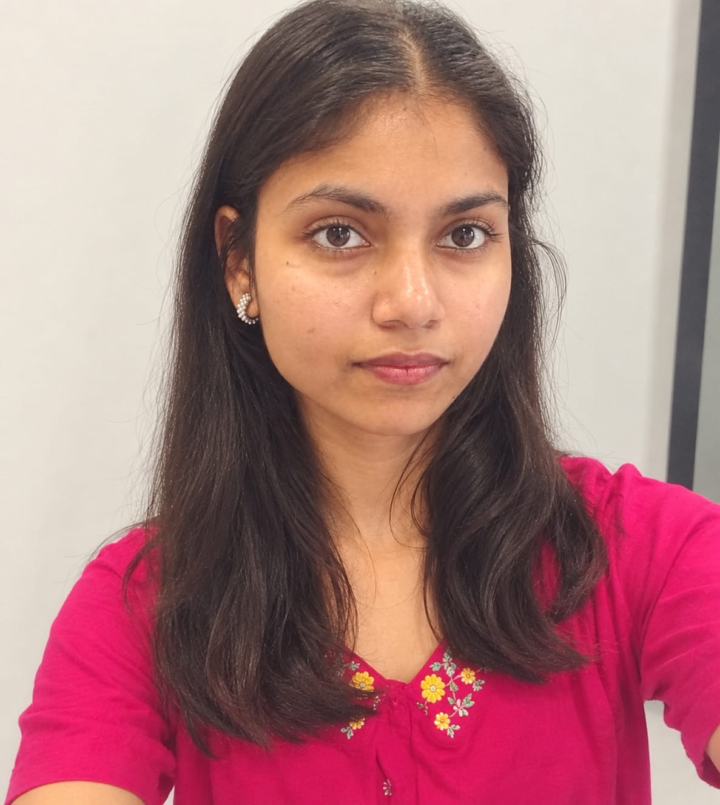

Bachelor of Technology (B.Tech)
Specialization: Artificial Intelligence & Machine Learning
Mirai School of Technology, Jagannath University, Jaipur
Current Status: First Semester
B.Tech Student | Artificial Intelligence & Machine Learning

Name: Nidhi Kumari
Course: B.Tech in AI & ML
Semester: First Semester
College: Mirai School of Technology
University: Jagannath University, Jaipur
I am an enthusiastic first-year B.Tech AI & ML student who is passionate about technology, creativity and innovation. I aim to develop my technical knowledge, improve my problem-solving abilities and gain practical experience by working on real-world projects. I look forward to learning new technologies and building solutions that can make a positive impact.
Specialization: Artificial Intelligence & Machine Learning
Mirai School of Technology, Jagannath University, Jaipur
Current Status: First Semester
Designed a patient-focused application prototype to help patients understand clinic waiting times and make their visits more convenient.
Tools: Figma, UI/UX Design
Worked on a web-based platform for managing and tracking college club activities. The project focuses on organizing club information and making activity tracking easier.
Tools: HTML, CSS, React, Vite
Email: niikumari956@gmail.com
Phone: 6205173744
LinkedIn: View LinkedIn Profile
GitHub: View GitHub Profile